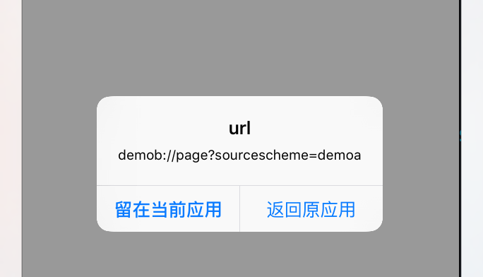

iOS学习导图
本文简单罗列了下iOS相关的点。
基础

- Runloop
- 多线程&同步
- Core Animation
Core Animation编程指南
iOS-Core-Animation-Advanced-Techniques
- Block
- GCD
- Core Foundation
应用优化
2016/6/19

移动三方应用分享
iOS原生分享控件
NSString *textToShare = @"要分享的文本内容";
UIImage *imageToShare = [UIImage imageNamed:@"shop"];
NSURL *urlToShare = [NSURL URLWithString:@"http://blog.csdn.net/hitwhylz"];
NSArray *activityItems = @[textToShare, imageToShare, urlToShare];
UIActivityViewController *vc = [[UIActivityViewController alloc]initWithActivityItems:activityItems applicationActivities:nil];
[self presentViewController:vc animated:YES completion:nil];
三方开放平台
- 新浪微博 http://open.weibo.com
- 腾讯微博 http://dev.t.qq.com
- QQ空间，朋友网 http://connect.qq.com/intro/login/
- QQ分享（QQ好友，QQ群等）http://mobile.qq.com/api/
- 豆瓣社区 http://developers.douban.com
- 人人网 http://dev.renren.com
- 微信好友 微信朋友圈 http://open.weixin.qq.com
- 友盟U-Share
- 用过友盟Share，但是遇到友盟ShareSDK中使用的微信SDK版本与官方不同步的问题，后来放弃了友盟ShareSDK，全部采用原生官方SDK，如微信（好友、朋友圈）、QQ、微博，在国内，这三个分享渠道已经能覆盖80%了。
URL Schemes
- iOS应用间可以通过
URL Schemes解决相互通信的问题。 - DemoA通过
openURL唤起DemoB，并带上参数。
DemoA
[[UIApplication sharedApplication] openURL:[NSURL URLWithString:@"demob://page?sourcescheme=demoa"]];
- DemoB收到并解析参数并作逻辑处理，然后同样通过
openURL返回到DemoA，并带上参数。
DemoB
- (BOOL)handleUrl:(NSURL *)url {
NSArray *querys = [url.query componentsSeparatedByString:@"&"];
NSMutableDictionary *queryDict = [[NSMutableDictionary alloc] init];
for (NSString *q in querys) {
NSArray *kv = [q componentsSeparatedByString:@"="];
if (kv.count == 2) {
queryDict[kv[0]] = kv[1];
}
}
NSString *returnScheme = queryDict[@"sourcescheme"];
UIAlertController *vc = [UIAlertController alertControllerWithTitle:@"url"
message:url.absoluteString
preferredStyle:UIAlertControllerStyleAlert];
[vc addAction:[UIAlertAction actionWithTitle:@"返回原应用"
style:UIAlertActionStyleDefault
handler:^(UIAlertAction * _Nonnull action) {
[[UIApplication sharedApplication] openURL:[NSURL URLWithString:[NSString stringWithFormat:@"%@://", returnScheme]]];
}]];
[vc addAction:[UIAlertAction actionWithTitle:@"留在当前应用"
style:UIAlertActionStyleCancel
handler:^(UIAlertAction * _Nonnull action) {
}]];
[self.window.rootViewController presentViewController:vc animated:YES completion:nil];
return YES;
}
- (BOOL)application:(UIApplication *)application handleOpenURL:(NSURL *)url NS_DEPRECATED_IOS(2_0, 9_0, "Please use application:openURL:options:") __TVOS_PROHIBITED {
return [self handleUrl:url];
}
- (BOOL)application:(UIApplication *)application openURL:(NSURL *)url sourceApplication:(nullable NSString *)sourceApplication annotation:(id)annotation NS_DEPRECATED_IOS(4_2, 9_0, "Please use application:openURL:options:") __TVOS_PROHIBITED {
return [self handleUrl:url];
}
- (BOOL)application:(UIApplication *)app openURL:(NSURL *)url options:(NSDictionary<NSString*, id> *)options NS_AVAILABLE_IOS(9_0) {
return [self handleUrl:url];
}


三方分享或认证
- 三方应用分享或认证都会用到
URL Schemes流程，实际过程和参数会更复杂点，还需要考虑安全性。 如微信三方登录认证，除了三方应用通过URL Scheme跳转微信拿到code，再通过https请求微信后台拿到access_token，后续用https带上access_token可以请求各种资源。

三方分享则是通过
URL Schemes带上不同格式的数据（文本、图片、链接等）。
2016/5/3
Copyright © 2015 Powered by MWeb, Theme used GitHub CSS.